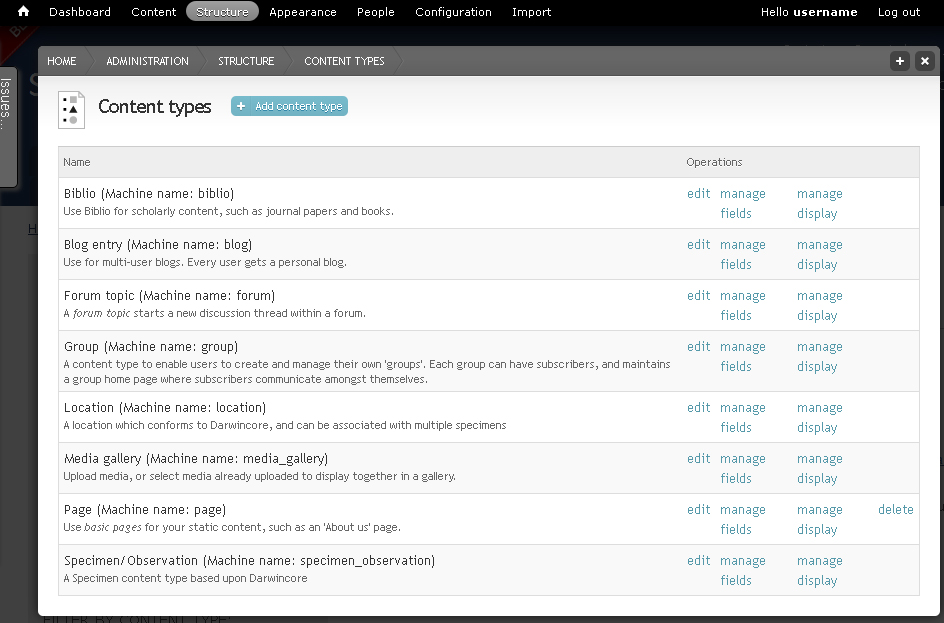

Custom content¶
So far we have only worked with predefined content types, but Scratchpads also let you defined custom content types. This allows you to create content in which the data are entered and saved in specific fields.
Adding content type¶
From the Admin menu go to Structure > Content types
Click + Add content type link at the top
Enter a NAME (“Literature mining”) and DESCRIPTION

Under the Submission form settings tab change the TITLE FIELD LABEL to Taxonomic name as cited
Under the Display settings tab choose the View display and select Display on species pages
Choose on which tab of the species pages the new content type should be visible
Select Own tab so that the new content type appears on a tab of its own
Click the Save and add fields button. This will lead to the Manage fields tab
Managing fields¶
By default every new content type has a title and a body field. In this example the body field is not needed, so click on delete for this field.
Term reference fields¶
First we want to add a field that links to the biological classification, so that we can tag our new literature mining content to one or more taxonomic names.
Like with other content types, the Taxonomic name field should be an autocomplete field. A field like this is already present in several content types, so we don’t need to create a new one, we can use the existing one. Because it links to taxonomy terms a field like this is called a Term reference.

- Go to Add existing field. As Label enter “Taxonomic name”
- In the Field to share drop down menu select Term reference: field_taxonomic_name (Taxonomic name) and in the Form element to edit the data drop down menu select Autocomplete term widget (tagging)
- Click Save
NOTE: These existing fields are locked, so you will not be able to edit their settings (make them required, for example).
Node reference fields¶
Next we want to add a field that links to the biblio content type (References), so that we can select a biblio node. This field should be a dropdown menu. Again, a field like this is already present in other content types, so we can use the existing one. Because it links to a node in a different content type a field like this is called a Node reference

- Go to Add existing field. As Label enter “Reference”, in the Field to share drop down menu select Node reference: field_reference (Reference) and in the Form element to edit the data drop down menu select Select list
- Click Save
Text fields¶
Next we want to add a field for the page number on which the taxon is cited in the reference. A page field doesn’t exist, yet, so we need to create a new field. Since pages are numbers, we could use Integer as data type. However, in some cases we might want to add a range of pages and this would not be possible with “Integer”, so instead it is better to use the “Text” data type, which is for text that is up to 255 characters long.
- Go to Add new field. As Label enter “Page”, in the Type of data to store drop down menu select Text and in the Form element to edit the data drop down menu select Text field
- Click Save
- Under Field settings enter “20” as MAXIMUM LENGTH. This should give plenty of space for adding the page number.
List fields¶
There are various options for adding keywords to our new content type. We can just link to the existing keywords on the site that are for example used for images. To do this we would add the existing “Term reference: Field_keywords (Keywords) field. We could also create a new non-biological vocabulary for our literature mining keywords and create a new term reference field linking to this vocabulary. With the right settings, new keywords can be added to this vocabulary by adding them to the literature mining node. Another option would be to create a list of literature mining categories to choose from and then enter additional information or keywords into a text field. We will do the latter now:
Go to Add new field. As Label enter “Literature mining category”, in the Type of data to store drop down menu select List (text) and in the Form element to edit the data drop down menu select Select list
Click Save

In the ALLOWED VALUES LIST enter a few categories, e.g. distribution, original name, type information, one line each
Click Save and Save on the next page also
Long text fields¶
For adding extracts of the cited paper, we need a text field that can hold more information then just 255 characters. So we will use a ‘Long text’ field.
- Go to ‘Add new field’. As ‘Label’ enter “Text”, in the ‘Type of data to store’ drop down menu select “Long text” and in the ‘Form element to edit the data’ drop down menu select “Text area”. Save and save again.
- As HELP TEXT enter “Enter keywords or text extracts from the mined paper” and under TEXT PROCESSING select “Filtered text”, so that it is possible to use italics and other formatting. Save settings.
Groups¶
To facilitate the entering and viewing of fields, they can be sorted into groups. Groups can be shown as boxes around the fields (Fieldset) or for example as horizontal tabs in the view and edit mode. For the few fields we have in this content type groups are not really necessary, but we will add two anyway to demonstrate horizontal tabs. Each horizontal tab (horizontal tab) is a group and all tabs together also form a group (horizontal tabs group). First we need to create a horizontal tab group to which we then each Horizontal tab.
Go to Add new group. As Label enter “Horizontal tabs” and as Group name enter “horizontal_tabs”
In the drop down menu select Horizontal tabs group
Click Save
Go to Add new group. As Label enter “Reference data” and as Group name enter “reference_data”
In the drop down menu select Horizontal tab
Click Save
Drop and drag the Reference and the Page fields into the Reference data group
Click Save
Create another horizontal tab called “Text mining” and move the Literature mining category and Text fields into it
Click Save
Drag the Reference data and the Text mining groups into the Horizontal tabs group

Click Save
Create a new node¶
Check out how your new content type looks by adding a literature mining node.
From the Admin menu go to Content > Literature mining > Add

If you do this in a separate browser tab you can play around with changing the settings and seeing how this affects the view.
Managing display¶
The way the node is displayed can be changed under the Manage display tab. Two things can be changed: The position and presence of the label and the format of the field. The field format largely depends on the field type

Change all the labels to “Inline” to save space and have a look at the format options for different field types but don’t change any
Click Save


At the point where a new content type has been saved a menu item is added to the Main menu. By default this page just lists the titles of literature mining nodes with a link to the respective node. To improve this page and change it into, for example, a matrix, you need to edit the view. See Adding and editing views for more info